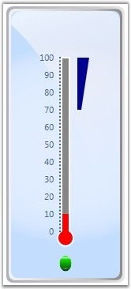

Following step-by-step instructions illustrate create a Linear Gauge and add elements.
1. Add a Linear Gauge control to the Panel by using the following code. Note that the Default orientation of the gauge is Vertical.
|
[XAML]
<Window x:Class="WpfApplication1.Window1" xmlns="http://schemas.microsoft.com/winfx/2006/xaml/presentation" xmlns:x="http://schemas.microsoft.com/winfx/2006/xaml" xmlns:syncfusion="clr-namespace:Syncfusion.Windows.Gauge;assembly=Syncfusion.Gauge.WPF" xmlns:glob="clr-namespace:System.Globalization;assembly=mscorlib" Title="Window1" Height="300" Width="300"> <Grid x:Name="LayoutRoot"> <syncfusion:LinearGauge Height="350" Margin="25,-14,0,0" Name="linearGauge" Width="150" HorizontalAlignment="Left" VerticalAlignment="Top"/> </Grid> </Window> |
|
[C#]
LinearGauge lineargauge = new LinearGauge(); lineargauge.Height = 350; lineargauge.Width = 150; lineargauge.HorizontalAlignment = HorizontalAlignment.Left; lineargauge.VerticalAlignment = VerticalAlignment.Top; LayoutRoot.Children.Add(lineargauge); |
2. To add a Scale to the Linear Gauge, make use of the following code.
|
[XAML]
<syncfusion:LinearGauge.Scales> <syncfusion:LinearScale Maximum="100" Minimum="0" ScaleBarLength="220" ScaleBarSize="10" BorderBrush="White" BorderWidth="2" BackgroundBrush="Gray" MajorIntervalValue="10" MinorIntervalValue="2" ShadowOffset="0" ScaleDirection="CounterClockwise"> </syncfusion:LinearGauge.Scales> |
|
[C#]
LinearScale scale = new LinearScale(); scale.Maximum = 100; scale.Minimum = 0; scale.ScaleBarLength = 220; scale.ScaleBarSize = 10; scale.BorderBrush = new SolidColorBrush(Colors.White); scale.BorderWidth = 2; scale.BackgroundBrush = new SolidColorBrush(Colors.Gray); scale.MajorIntervalValue = 10; scale.MinorIntervalValue = 2; scale.ShadowOffset = 0; scale.ScaleDirection = ScaleDirection.CounterClockwise; |
3. To add a Pointer to the Linear Gauge, make use of the following code.
|
[XAML]
<syncfusion:LinearScale.Pointers> <syncfusion:LinearBarPointer Value="10" x:Name="pointer" PointerWidth="8"/> </syncfusion:LinearScale.Pointers> |
|
[C#]
LinearPointer pointer = new LinearBarPointer(); pointer.Value = 10; pointer.PointerWidth = 8; scale.Pointers.Add(pointer); |
4. To add a complete Linear Gauge, make use of the following code.
|
[XAML]
<syncfusion:LinearGauge Height="350" Margin="25,20,0,0" Name="linearGauge" Width="150" HorizontalAlignment="Left" VerticalAlignment="Top"> <syncfusion:LinearGauge.StateIndicators> <syncfusion:StateIndicator Name="m_indicator" Value="{Binding Value,ElementName=pointer1}" Text="Off" FontFamily="Verdana" FontSize="12" IndicatorHeight="20" IndicatorStyle="CircularLED" IndicatorWidth="15" Location="50,93"> <syncfusion:StateIndicator.StateRanges>
<!--Hosting State Range to Indicator.--> <syncfusion:StateRange EndValue="100" StartValue="70"/> </syncfusion:StateIndicator.StateRanges> </syncfusion:StateIndicator> </syncfusion:LinearGauge.StateIndicators> <syncfusion:LinearGauge.Scales>
<!--Scale Style is Thermometer.--> <syncfusion:LinearScale Maximum="100" Minimum="0" ScaleStyle="Thermometer" ScaleBarLength="220" ScaleBarSize="10" BorderBrush="White" BorderWidth="2" BackgroundBrush="Gray" MajorIntervalValue="10" MinorIntervalValue="2" ShadowOffset="0" ScaleDirection="CounterClockwise"> <syncfusion:LinearScale.Pointers>
<!--Bar Style of Bar Pointer is Thermometer.--> <syncfusion:LinearBarPointer Value="10" x:Name="pointer1" PointerWidth="8" BarStyle="Thermometer" /> </syncfusion:LinearScale.Pointers> <syncfusion:LinearScale.Ranges> <syncfusion:LinearRange BackgroundBrush="DarkBlue" RangePosition="Outside" DistanceFromScale="10" StartWidth="5" EndWidth="15" StartValue="70" EndValue="100" > </syncfusion:LinearRange> </syncfusion:LinearScale.Ranges> <syncfusion:LinearScale.Ticks> <syncfusion:LinearMarkTick DistanceFromScale="1" TickHeight="2" TickPlacement="Inside" TickStyle="MinorTick" TickWidth="2" /> <syncfusion:LinearLabelTick x:Name="label1" DistanceFromScale="10" FontSize="11" TickPlacement="Inside" TickStyle="MajorTick" > <syncfusion:LinearLabelTick.NumberFormatInfo> <glob:NumberFormatInfo NumberDecimalDigits="0"/> </syncfusion:LinearLabelTick.NumberFormatInfo> </syncfusion:LinearLabelTick> </syncfusion:LinearScale.Ticks> </syncfusion:LinearScale> </syncfusion:LinearGauge.Scales>
<!--Custom labels for each set of label and mark ticks.--> <syncfusion:LinearGauge.CustomLabels> <syncfusion:CircularCustomLabel Name="custlabel1" FontWeight="5" BackgroundBrush="GhostWhite" FontSize="15" TextAngle="0" Location="32,90"/> </syncfusion:LinearGauge.CustomLabels> </syncfusion:LinearGauge> |
|
[C#]
LinearGauge lineargauge = new LinearGauge(); lineargauge.Height = 350; lineargauge.Width = 150; lineargauge.HorizontalAlignment = HorizontalAlignment.Left; lineargauge.VerticalAlignment = VerticalAlignment.Top; StateIndicator m_indicator = new StateIndicator(); m_indicator.Location = new Point(75, 93); m_indicator.IndicatorHeight = 10; m_indicator.IndicatorWidth = 10; m_indicator.FontSize = 12; m_indicator.IndicatorStyle = IndicatorStyle.CircularLED; m_indicator.Text = "Normal"; m_indicator.BackgroundBrush = new SolidColorBrush(Colors.Green); m_indicator.ActiveBackgroundBrush = new SolidColorBrush(Colors.Red); m_indicator.ActiveText = "High"; lineargauge.StateIndicators.Add(m_indicator);
// Creating Scale and adding to gauge. LinearScale scale = new LinearScale(); scale.Maximum = 100; scale.Minimum = 0; scale.ScaleBarLength = 220; scale.ScaleBarSize = 10; scale.BorderBrush = new SolidColorBrush(Colors.White); scale.BorderWidth = 2; scale.BackgroundBrush = new SolidColorBrush(Colors.Gray); scale.MajorIntervalValue = 10; scale.MinorIntervalValue = 2; scale.ShadowOffset = 0; scale.ScaleDirection = ScaleDirection.CounterClockwise;
// Creating Pointer and adding to Scale. LinearPointer pointer = new LinearBarPointer(); pointer.Value = 10; pointer.PointerWidth = 8; scale.Pointers.Add(pointer);
// Creating Range and adding to Scale. LinearRange l_range = new LinearRange(); l_range.BackgroundBrush = new SolidColorBrush(Colors.DarkBlue); l_range.RangePosition = ScalePlacement.Outside; l_range.DistanceFromScale = 10; l_range.StartWidth = 5; l_range.EndWidth = 15; l_range.StartValue = 70; l_range.EndValue = 100; scale.Ranges.Add(l_range);
// Creating Mark Tick and adding to Scale. LinearMarkTick l_marktick = new LinearMarkTick(); l_marktick.TickShape = TickShape.Rectangle; l_marktick.TickWidth = 2; l_marktick.TickHeight = 5; l_marktick.TickStyle = TickStyle.MajorTick; l_marktick.DistanceFromScale = 0; l_marktick.TickPlacement = ScalePlacement.Inside; scale.Ticks.Add(l_marktick);
// Creating Tick Label and adding to Scale. LinearLabelTick l_label = new LinearLabelTick(); l_label.FontSize = 15; l_label.FontFamily = new FontFamily("Arial"); l_label.DistanceFromScale = 5; l_label.TickPlacement = ScalePlacement.Inside; l_label.BackgroundBrush = new SolidColorBrush(Colors.Brown); scale.Ticks.Add(l_label); lineargauge.Scales.Add(scale); LayoutRoot.Children.Add(lineargauge); |

Figure 58: Complete Linear Gauge
See Also